How do you make AI trustworthy when it controls money?
Senpi is an AI-native trading platform for Hyperliquid perpetuals: describe a strategy in plain English and an AI agent builds, funds, runs and protects it. The more the AI could do, the less people understood it. As co-founder and design lead, working with the founders, engineering and growth, I made autonomous trading visible, understandable and controllable.
Co-founder · Design lead
Product strategy · UX · interaction · visual · AI experience
Founders · engineering · growth
Onboarding · funding · agent visibility & control · trust model
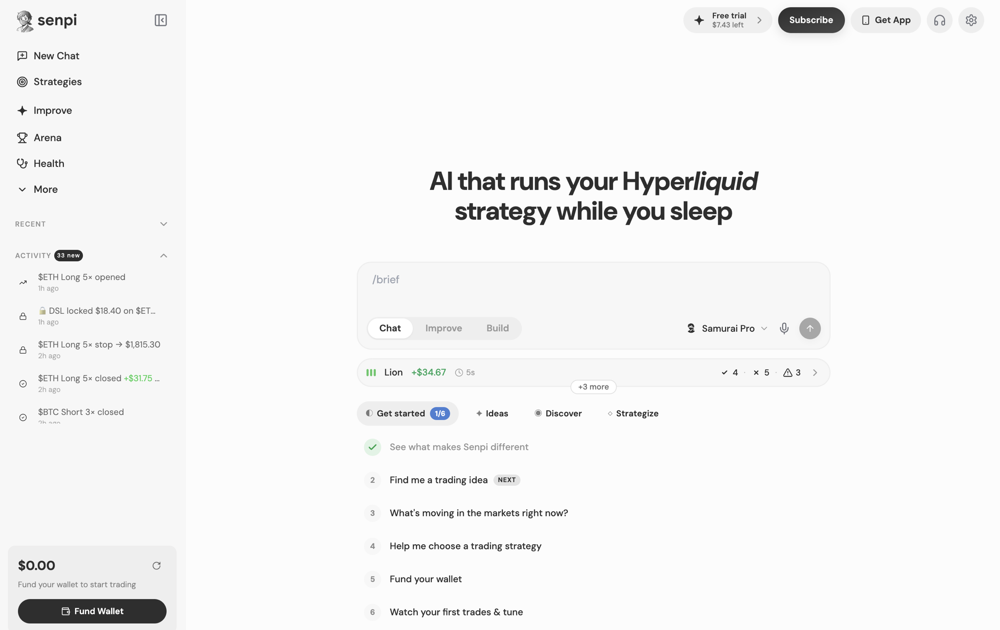
The problem
People could see the outcome. They couldn't see the thinking.
A trading product asks “what do you want to do?” An autonomous one asks “what should I do for you?” Scanning, evaluating and deliberately waiting all looked the same to the user: nothing is happening.
Once people funded, they used the product. The barrier was trust, not trading. Three decisions did most of the work of closing it.
Decision 01 · Funding
Earn trust at the deposit screen, and nowhere louder.
Funding was a QR code, an address and a row of network chips. Technically complete, and no help to someone moving real money into a product they'd known for five minutes.
DirectionsBare QR and address
Everything technically necessary. None of what a nervous person needs.
Reassurance everywhere
Over-reassurance reads as nervousness.
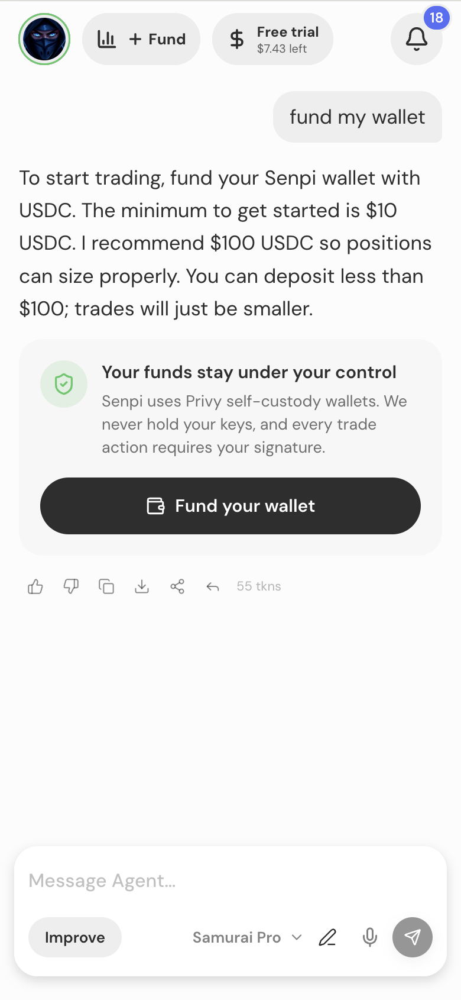
Answer the fear at the moment it happens
One trust block on the funding ask, and quiet everywhere else.
“Is my money safe?”
Self-custody, stated plainly: the wallet is yours, secured by Privy. Only you hold the key, and you can withdraw anytime.
“What can the agent do?”
It can trade with your permission. It can never withdraw or transfer. Limits stated as facts, not marketing.
“Who is behind this?”
A quiet investor strip at the moment of most doubt, not spread across the site.
“Is my account protected?”
Multi-factor authentication via Privy on sign-in and consequential actions.
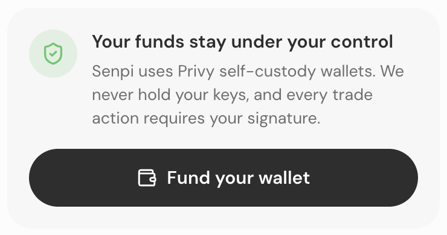
- A promise, not a feature. The headline says what the user keeps: control of their funds.
- Mechanism in one line. Self-custody wallets, no keys held, every trade signed.
- The action lives inside the reassurance, so trust and the ask arrive together.
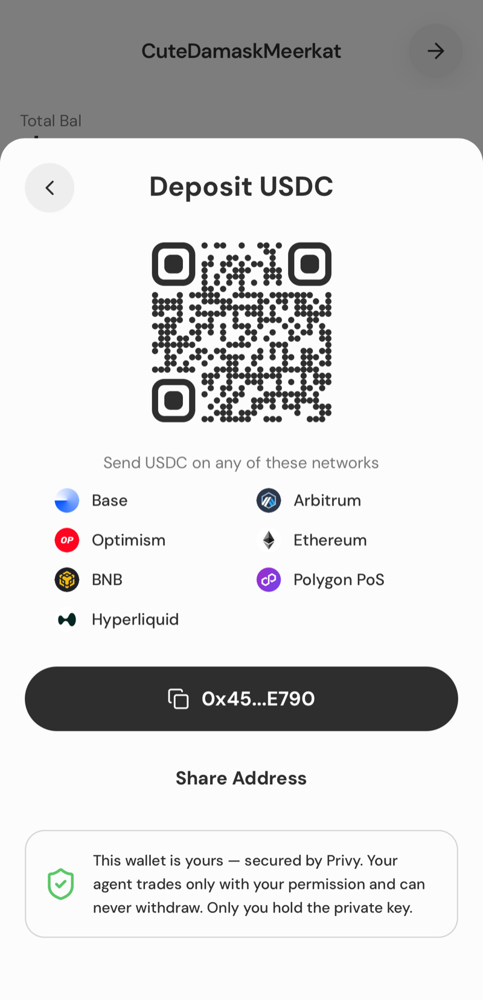
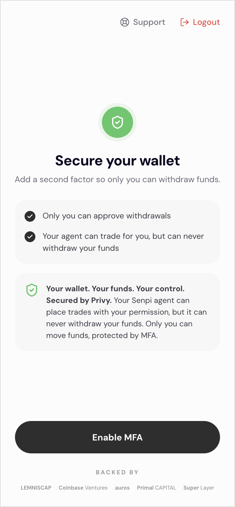
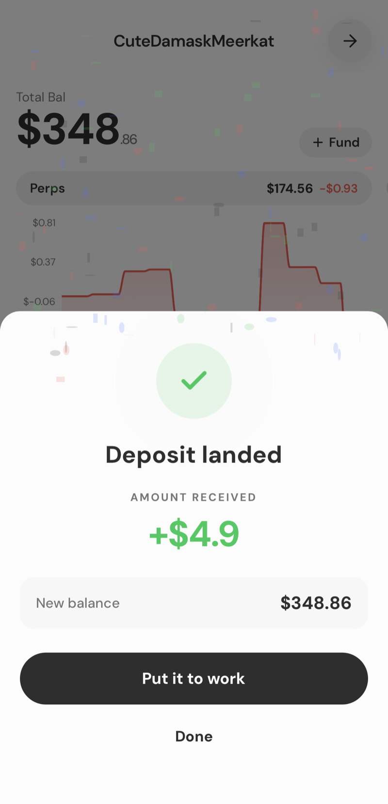
Decision 02 · Visibility
Show the decisions that matter, not everything the agent did.
An agent makes hundreds of decisions that never become trades. Show only trades and people see “nothing happened.” Show everything and they see noise.
Trades only
An agent that was working looked idle.
Show everything
Complete and unreadable. Transparency turned into telemetry.
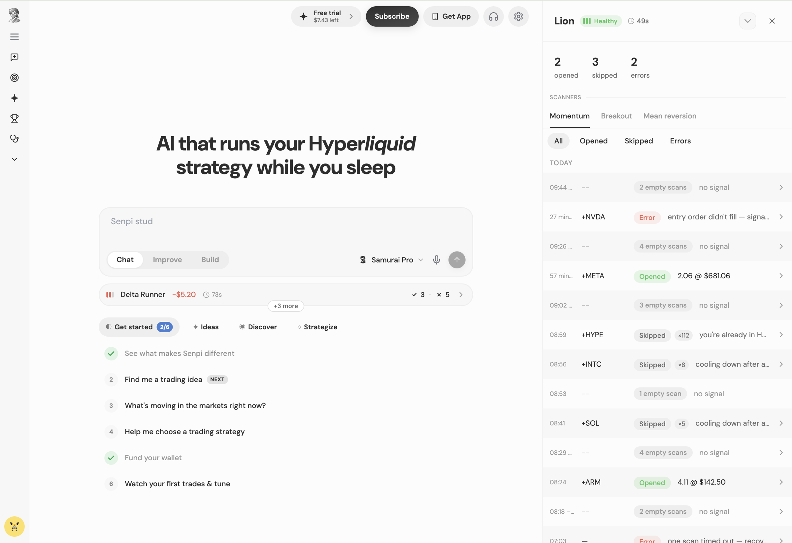
A curated decision timeline
What the agent considered, acted on and skipped, and why, plus errors, fills and strategy state.
An opened position doesn't explain itself. So every position carries its reasoning:
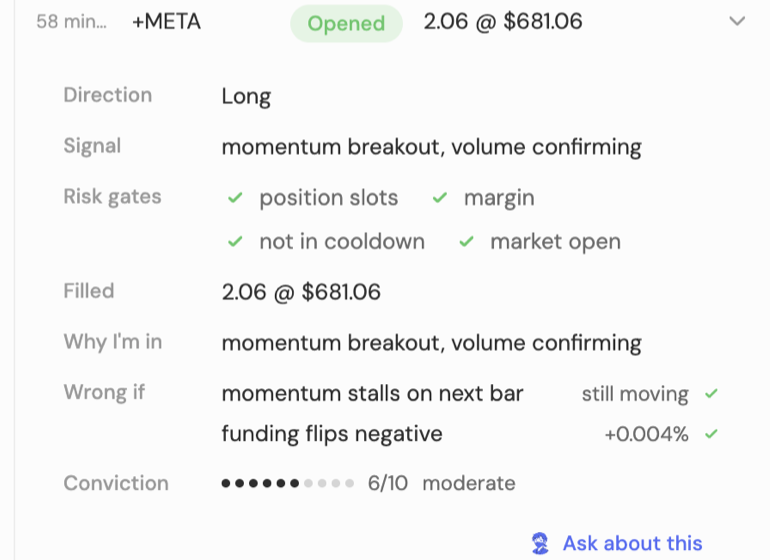
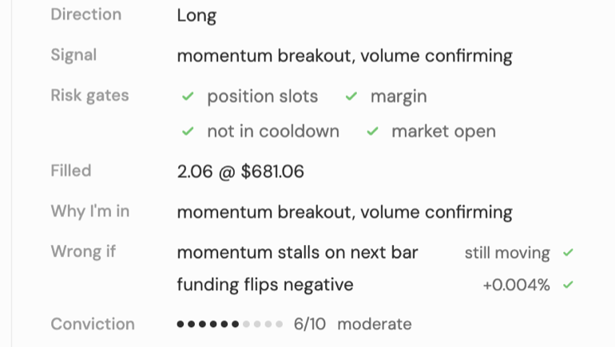
A losing trade stops reading as “the AI lost my money” and starts reading as “the strategy believed X, and Y invalidated it.”
Decision 03 · Control
Ask about consequences, not tools.
The old permission model interrupted people on their own harmless actions and stayed silent on the agent's consequential ones.
Directions“Can this agent use this tool?”
Generic technical access: asked on harmless actions, missing on consequential ones.
[Name the direction]
[One line on why it lost]
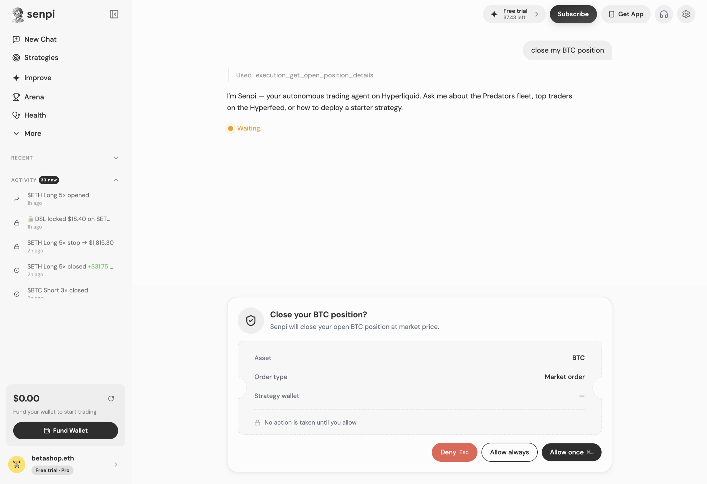
“This is what the agent is about to do. Proceed?”
Intervention where the consequence is, not where the implementation needs permission.
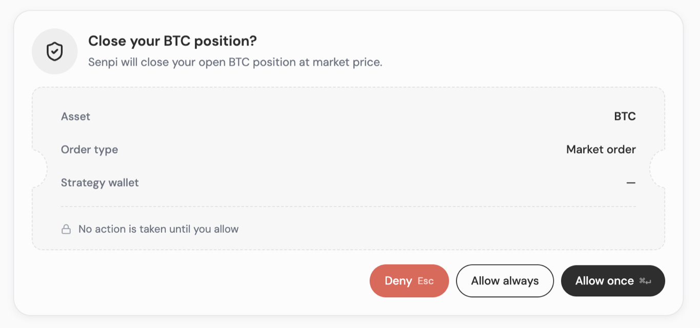
- The title is the consequence, in the user's words: close your BTC position.
- The details read like a receipt: asset, order type, wallet.
- “No action is taken until you allow” says who is in control before the buttons do.
- Three honest answers: deny, allow once, or allow always, each with a keyboard shortcut.
Outcomes
The conversion gain belongs to the whole body of onboarding, funding and trust work with growth and engineering, not to any single screen.
Same product, one year apart.
Before · 2024
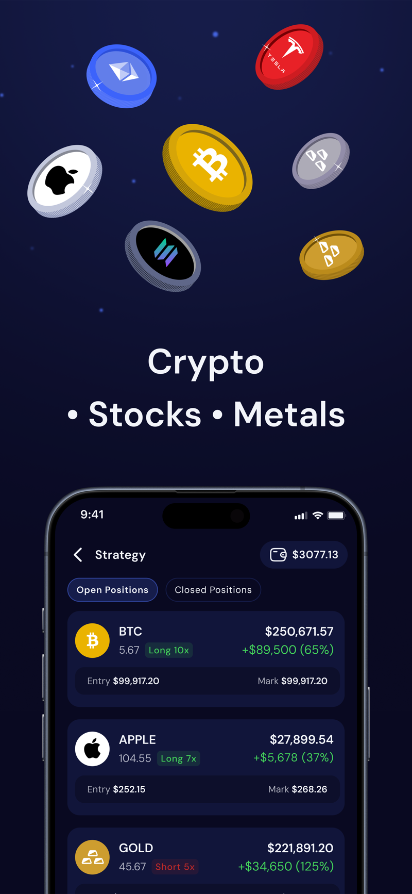
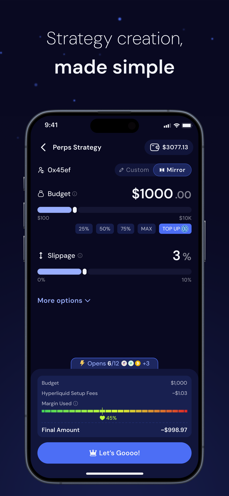
Now
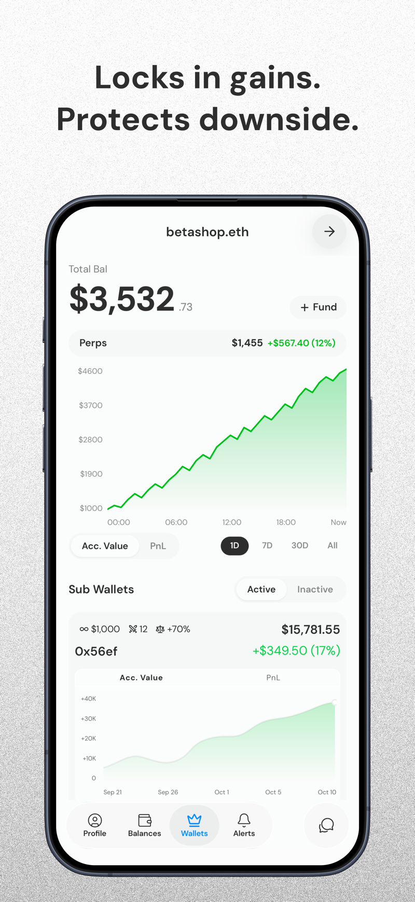
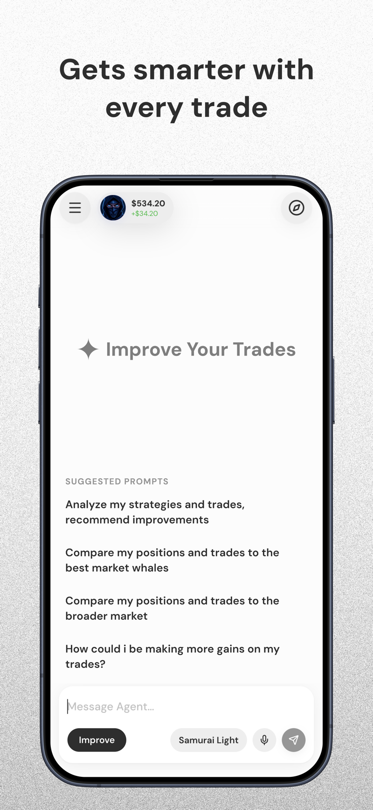
What I learned
Make autonomy understandable before making it powerful.
The answer wasn't more automation. It was visibility, explanation and control around it. Next in that direction, designed but not yet shipped: strategy-build previews, durable memory and proactive reviews.
[What I'd do differently: one honest sentence.]